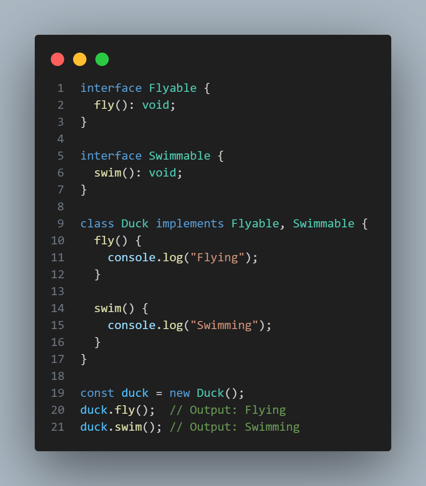
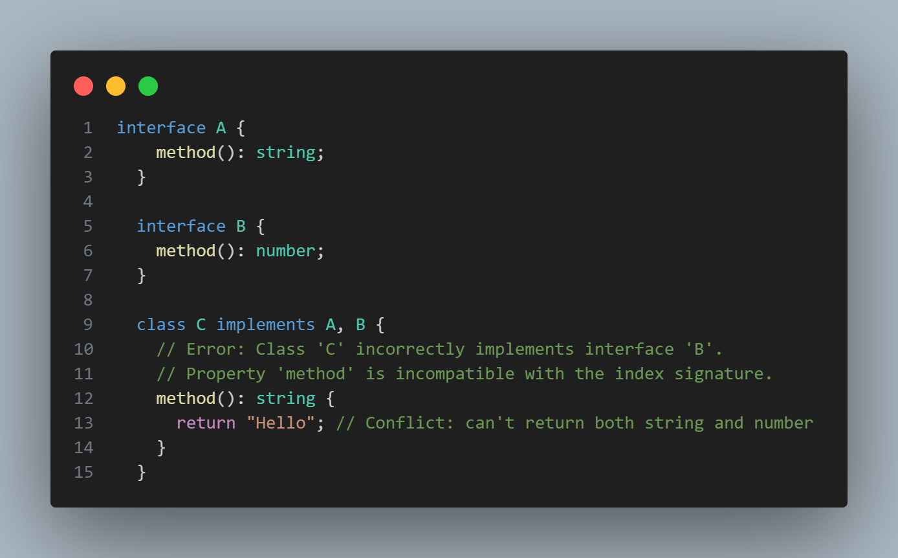
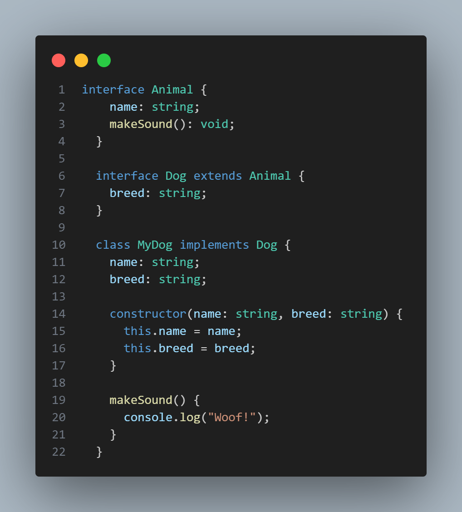

An interface in programming defines a contract for classes and objects, specifying methods and properties that must be have without implementing them. It helps ensure consistency across different classes and objects.
A class can also implement 2 or more interfaces
if two interfaces have the same method name but specify different return types, it will result in a type conflict when a class tries to implement both interfaces. TypeScript enforces that the class must resolve the conflicting types and provide a single return type. Same is true with objects.
This is done using extends keyword
